Méthodes et conseils pour le mapping
Le mapping est une activité que je trouve extrêmement divertissante et ludique. Elle succède souvent à la conception des graphismes ; c'est alors l'occasion d'exploiter le fruit de longues heures de travail. Bien sûr, mapper correctement c'est, comme pour toutes les disciplines de la création d'un jeu vidéo, un travail de patience (rien ne s'obtient en claquant des doigts). Mapper à partir de graphismes somptueux ne vous garantit pas un succès assuré… Et un mauvais mapping peut lourdement pénaliser des graphismes de qualité. Mais, et j'y reviendrai plus loin, le bon graphiste aura vraisemblablement un maximum de chances d'être en même temps un bon mappeur. La raison ? Non pas un talent inné, mais un œil entraîné à repérer l'anomalie.
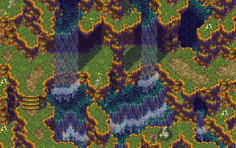
Je vous propose dans ce tutoriel des principes assez généraux, forcément imprécis car devant s'adapter à une multitude de cas. Son application directe concerne les graphismes 2D du type console 16 bit (ce sera le support des illustrations proposées). Toutefois la plupart des idées devraient aider quelque soit le support de création.
L'équilibre, rien que l'équilibre.
Le mapping est un domaine de création qui, comme tant d'autres, repose essentiellement sur l'équilibre (cela me parait si important que j'ai décidé d'en faire ma première partie ; si vous ne deviez lire qu'une seule chose de toute ce tutoriel, c'est bien cette partie là). Cette notion d'équilibre peut être abordée à quatre échelles différentes, un peu comme si l'on zoomait successivement quatre fois sur une map :
- Au niveau le plus large, une vue d'ensemble de toutes les maps
- Au niveau intermédiaire, une map dans sa totalité
- Au niveau rapproché, un équilibre appliqué zone par zone
- Au niveau le plus fin, une zone dans la zone nécessitant un micro-mapping
Commençons par le niveau le plus large :
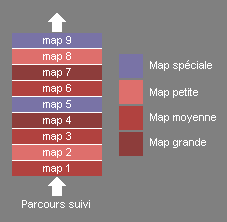
Il faut penser le parcours du joueur vis à vis de l'ensemble des maps, et donc faire alterner de manière équilibrée les maps grandes, moyennes et petites (représentées par les différentes teintes de rouge) mais aussi les maps « ordinaires » — en rouge (partie de forêt, pièce de donjon, village…) et les maps « particulières » — en bleu (lieu spécifique comme un gouffre, une immense cascade, une fontaine magique…). Bien sûr, mon schéma est très simplificateur et une succession de petites maps (exemple : pour un labyrinthe) n'est pas un mal en soi ! Mais il faut bien avoir en tête que c'est une alternance réfléchie de la taille et du type de maps qui va éviter au joueur de se lasser. Pour résumer, sa motivation sera d'aller de lieu particulier en lieu particulier (on fait tout le donjon pour atteindre la salle du boss contenant moult trésors…) : il faut donc doser la proportion de ces lieux pour ne pas trop en mettre (conserver leur statut attractif) mais en mettre suffisamment (si le joueur doit traverser une quinzaine de maps ordinaires avant de tomber sur un coin sympa, soyez assurés que sa motivation pour avancer dans le jeu va en prendre un coup).
A tout ceci se superpose la nécessité, bien sûr, de faire varier les lieux visités (ville, forêt, grotte…) mais le principe vu ci-dessus peut concerner un seul type de lieu. Par exemple, pour un village découpé en plusieurs maps : alternance de grands et petits quartiers, lieux particuliers disséminés avec soin (statue du roi sur la place centrale, manoir hanté plutôt isolé, etc.). Et un autre facteur est à prendre en compte : l'état d'avancement dans le jeu. Les grandes maps ne doivent pas arriver dès le début du jeu (cela va décourager le joueur). Il faut réussir à faire une gradation de la taille des maps en commençant par quelque chose de très petit.
Mais passons maintenant à l'analyse de l'équilibre pour une seule map :
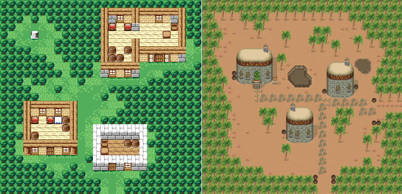
Je me sers d'un tileset personnel (image de gauche) dont l'aspect très basique (éléments tous égaux en taille et peu nombreux) me permet d'illustrer de manière vraiment concrète les idées proposées dans ce tutoriel. Quelque soit la complexité des graphismes utilisés, les principes fondateurs sont toujours applicables (comme le montre la capture d'écran de Secret of Mana que j'ai mise à côté). Ici je pense que le principe d'équilibre est respecté. Pourquoi ? Parce tout est réparti. Les arbres, qui ceinturent le village, ne sont pas groupés en une seule masse qui dominerait le reste. Les maisons sont disposées de manière à couvrir l'ensemble de la map. A cet ordonnancement régulier des bâtiments vient se greffer un « élément perturbateur » : une colonne isolée dans une clairière. Mais surtout, l'effet d'équilibre provient de l'opposition entre une grande maison d'un côté, et deux maisons plus petites de l'autre. Et la clé d'un bon mapping, c'est la répartition des masses.
Schématisons l'exemple :
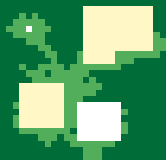
Pour équilibrer il faut répartir, mais pas répartir de manière régulière. Une régularité parfaite, une symétrie systématique peut rendre un jeu complètement fade et sans aucun intérêt pour l'exploration (voir plus loin pour la différence entre le mapping de la nature et le mapping de constructions humaines). Car le but est encore une fois le même : amener le joueur à explorer tout ce qu'on veut qu'il explore et éviter qu'il se lasse. Le secret consiste donc à mettre en opposition des masses. Si on me demandait de résumer en une seule image un « bon mapping », je ferais ce schéma :
Trois éléments disposés sur une surface de 3x3 positions d'éléments possibles, s'organisant selon le regroupement de deux d'entre eux d'un côté et un élément isolé de l'autre. Cette agencement donne une dynamique, un angle de lecture suggéré, et c'est bien là le souhait de tout mappeur : faire que le joueur suive l'un des parcours suggérés (j'y reviendrai plus loin). Histoire d'être bien clair, je ne vous conseille pas d'appliquer de manière primaire cette répartition là mais d'avoir en tête cette illustration : éléments regroupés et éléments isolés. Quand on doit mapper un village avec dix maisons, par exemple, recourir à ce genre de principe est indispensable. Une objection pourrait être opposée à tout ça : quand on explore, on ne voit quasiment jamais la map dans son ensemble. Le joueur a devant lui une vision cadrée, un fragment de la map. En fait c'est le déplacement qui va donner une vision globale ; si le déplacement est particulièrement lent, cette vision globale sera plus difficilement perceptible, mais dans tous les cas le joueur va ressentir l'équilibre général – ou le déséquilibre…
Mais puisque l'on parle de cadrage, passons au niveau rapproché de cette analyse de l'équilibre, avec une étude de zone (ce que le joueur aura toujours sous les yeux, puisqu'il visite la map « zone par zone »).
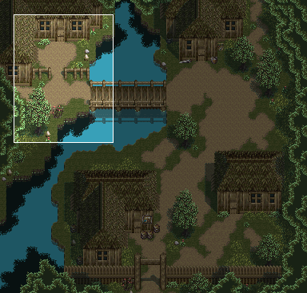
Voilà ce qui pourrait être qualifié de « zone ». Globalement, c'est un « lieu dans le lieu » (l'exemple parfait est l'intérieur d'une maison mais on peut penser à une clairière, un petit lac, un pont et ses environs…). Là encore, c'est le même discours que je répète et que vous devez mettre en application : penser « équilibre » avant tout. La répartition des arbres, de l'herbe haute ou courte, l'emplacement d'un tapis de fleurs, tout doit être pensé dans la modération et la nuance. Le joueur doit pouvoir faire une capture d'écran de n'importe quel endroit de la map et toujours se dire « c'est équilibré ».
Et ce n'est pas le sur-emploi d'un tile en particulier qui pose problème (l'exemple type : un champ de fleurs ou une forêt). Ce qui doit faire l'objet de toute votre attention ce sont les zones de cohabitation des tiles. Pour dire les choses autrement, et toujours du point de vue de l'équilibre, rien ne me dérange à la vue d'un lac faisant se répéter 40 fois un même tile d'eau ; en revanche la bande de sable parsemée de rochers qui fait jointure entre l'eau et la terre correspondra à une zone de « mapping mixte » qui requiert plus de travail et de soin.
Avant de passer à des choses moins théoriques, il nous reste à voir la question du micro-mapping.
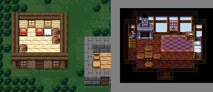
Le micro-mapping désigne les espaces extrêmement petits qui nécessitent de réfléchir à la position du moindre élément (si vous partagez ma vision d'un bon mappeur, vous me rétorquerez – à juste titre – que n'importe quel élément sur n'importe quelle map doit être placé après une réflexion, plus ou moins longue, ce à quoi j'adhère totalement ; toutefois dans le cas du micro-mapping il s'agit de mettre en évidence la difficulté à placer un lit dans une pièce qui fait cinq tiles de large par rapport au placement d'un tile de fleurs dans un vaste champ de fleurs). Encore une fois, les mêmes règles s'appliquent. On ne met pas trop d'un côté s'il n'y a pas quelque chose de l'autre côté pour faire contrepoids.
Finalement, vous aurez compris que l'objectif de cette partie (trop longue étant donnée la simplicité du message délivré – mais pour moi c'est le cœur de la discipline) était de vous faire voir que l'équilibre d'une map se pense sur une multitude d'échelles. Je vous recommande, bien sûr, de travailler du plus gros vers le plus petit. Pensez en premier lieu à l'organisation de toutes vos maps. Quand vous décidez de mapper l'une d'entre elles, brossez d'abord un rapide croquis de sa structure (pas besoin de papier et de crayon pour ça, servez-vous de tiles de couleur). Où seront les masses ? Où seront les éléments isolés ? Puis vous pouvez attaquer le mapping zone par zone, en veillant à porter un soin majeur aux espaces restreints.
Mapping de la nature, mapping de constructions humaines.
Mapping de la nature.
Attaquons quelque chose d'un peu plus concret, un peu plus pratique. Je disais plus haut qu'il faut fuir la symétrie ; en fait, tout dépend du type de lieu mappé. La nature déteste l'alignement et la régularité. Vous avez ici un lien direct avec la première partie : le regroupement de certains éléments et l'isolement de certains autres bénéficie non seulement à l'équilibre mais aussi à donner un aspect naturel, crédible, à la composition.
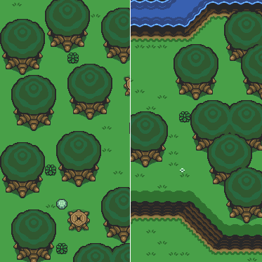
La partie de droite fait beaucoup plus naturelle que la partie de gauche. Bien sûr, les deux maps étant tirées du même jeu, on sait que la map de gauche correspond à un choix particulier des concepteurs, mais ça représente quand même ce que l'on trouve fréquemment dans des productions de type RPG amateurs pour lesquelles la disposition des éléments laisse trop d'équidistances. On retrouve ce problème spécialement pour les éléments considérés comme mineurs (cailloux, buissons, fleurs…), posés ici et là de manière complètement aléatoire, dans l'espoir inconscient que le résultat fera « naturel » grâce au « hasard » du placement. Or, et c'est là un joli paradoxe, pour faire du naturel il faut de la réflexion. Et le pseudo-hasard n'existe bien évidemment pas (on est enclin « par instinct » à mapper avec trop de régularité). Retenez donc bien ce conseil : l'équidistance, c'est le mal.
Un deuxième aspect concerne la variété des éléments utilisés. Je disais plus haut que la répétition d'un même tile sur de grandes surfaces n'était pas un problème par rapport à l'équilibre ; en revanche, du point de vue du naturel cela pose quelques soucis. Une forêt mérite au moins quelques types d'arbres différents ; un sol, quelques textures ; une falaise, des creux et des saillies. Sans faire tomber ce tutoriel dans des questions relevant du graphisme, il faut quand même souligner l'intérêt d'un chipset à contenir des variations d'un même tile.
Prenons l'exemple du sol. Cet exemple est particulièrement pertinent ; en effet il est question ici de casser les régularités en introduisant de la variété, or le sol est, dans le mapping, créé en juxtaposant plusieurs tiles identiques sur de grandes surfaces. Même les jeux vidéos à la pointe de la technologie vont utiliser une même texture qui se répète, aucun cm² ne sera jamais unique. Et le public admet sans broncher cette « symbolisation ». Pour un RPG en 2D, l'herbe peut même être suggérée par un simple à-plat vert. Or, plus on abuse de cet symbolique admise, plus on s'éloigne du naturel. Il faut donc avoir au minimum deux tiles différents pour créer un « tramage ».
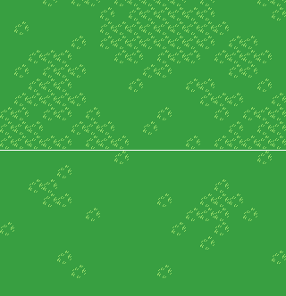
Cet exemple m'amène à parler d'un autre critère à prendre en compte quand on mappe du naturel : l'adoucissement, l'anti-aliasing. Oui, vous avez bien lu, ce maudit anti-aliasing (je sais que Fil vous a déjà pas mal suriné avec ça, mais j'en remet une couche, ça fait pas de mal). Et pourtant, jusqu'à présent on ne parlait pas de pixel art. Mais souvenez-vous : au début de ce tutoriel, j'avais évoqué les chances qu'un bon graphiste soit en même temps un bon mappeur. Pourquoi ? Parce que le même principe s'applique dans les deux domaines. L'idée, c'est d'adoucir la rupture trop brutale entre des surfaces trop différentes. Vous me direz : c'est encore un problème de graphisme… Mais regardez l'exemple de cette capture d'écran.
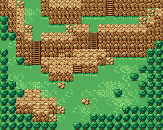
Les éléments correspondant à un « mapping d'anti-aliasing » sont les quelques arbres qui se détachent de la masse de la forêt, le petit bloc de falaise au sud, les petits cailloux éparpillés… Si ces éléments n'étaient pas là, la masse de la falaise serait en rupture avec la zone d'herbe en dessous, idem pour la forêt. Bien sûr, certains éléments doivent être mis en valeur et dans ce cas vous pouvez ne pas anti-aliaser, mais la plupart du temps vous devrez y recourir.
Sur cet exemple de sol :
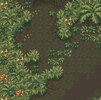
Ce sont les tiles d'herbe situés entre les masses qui viennent adoucir la transition herbe dense — terre. Ces éléments sont vraiment indispensables, même si le chipset est parfait à la base. Le challenge consiste ici à faire cohabiter ce mapping d'anti-aliasing avec la variété des tiles utilisés (par exemple, l'arbre qui se détache de la forêt doit être associé habilement aux éléments périphériques — buissons, rochers, etc. — et ne pas surcharger la composition).
Dans le même esprit, une falaise ne sera jamais découpée au couteau, avec des angles droits, la bordure d'une forêt jamais parfaitement rectiligne. Donc quand on mappe « au naturel », il faut constamment avoir en tête ce principe d'adoucissement.
Un dernier exemple :
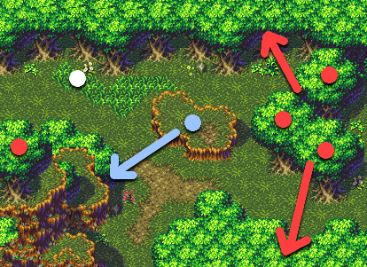
Les arbres isolés (ronds rouges) correspondent aux éléments d'adoucissement de la forêt. La petite élévation au centre (rond bleu) est extrêmement importante pour introduire la falaise plus élevée à gauche. On a donc ici une bonne map qui applique correctement le principe d'adoucissement, en revanche on peut contester l'aspect trop rectiligne de la forêt sur la partie supérieure. Une suggestion serait de placer un arbre isolé juste devant, sur le rond blanc.
Mapping de constructions humaines.
L'avantage ici, c'est de pouvoir mapper « ce que l'on veut ». En revanche, les mots-clé qui s'imposent sont réalisme et logique. On a tendance à oublier que la loi de l'économie joue un rôle majeur. Dans une maison, on découpe les pièces de manière à ne pas perdre de place, on ne réserve pas une pièce immense juste pour un tapis et quelques caisses dans un coin. Il y bien quelques cas d'exception, tels que les palais, châteaux, sanctuaires, où les plans de bâtiments peuvent suivre d'autres logiques et gaspiller volontairement de l'espace (église en forme de croix, hall d'un palais dont la seule fonction est de montrer la grandeur, la richesse du lieu, etc.).
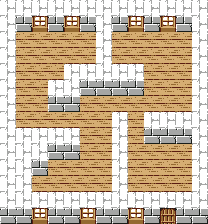
Cet exemple de map cumule les erreurs : perte de place en bas à gauche, murs non alignés, décrochement sans raison d'un mur commencé droit… Un vrai cauchemar d'architecte.
Toujours dans cette idée de réalisme architectural, il faut penser à la question de la portance. Sans aller trop loin dans le sujet, on peut quand même trouver bizarre de traverser une pièce gigantesque ne contenant aucun point d'appui tel qu'un prolongement de mur porteur ou quelques piliers… Alors bien sûr, beaucoup ne s'embarrassent pas de ce genre de questions, le plus souvent à tort (gagner en réalisme est toujours un plus). Par contre, aucun problème ici avec la symétrie. C'est même un double atout que de l'utiliser : d'un, pour son impact visuel, son esthétique ; de deux pour les points de repère que cela donne au joueur (s'il visite une pièce d'un côté, il sait qu'une pièce similaire est à visiter de l'autre).
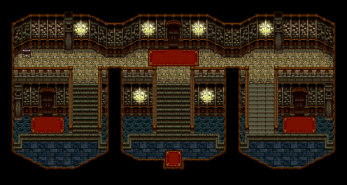
La symétrie donne de la force à une composition. L'usage de la symétrie pour un mapping de nature, comme on a pu le voir dans de vieux jeux vidéos, peut apporter un côté irréel à un décor, lui conférer du charme… Mais toujours au détriment du réalisme.
Attention aussi aux principes de réalisme les plus fondamentaux (tellement fondamentaux que j'ai hésité à les rappeler) : pas de fenêtre sur un mur si derrière il y a une falaise, pas de foyer de cheminée si la maison ne possède pas de tuyau de cheminée sur le toit, etc. En bref, malgré l'aspect souvent simples des graphismes utilisés et la faible diversité des tiles utilisés, mettez-vous à la place de ceux qui auraient bâti les constructions que vous mappez.
Le mapping de constructions humaines pose généralement moins de problèmes que celui de la nature. Tout est justifiable, d'une manière ou d'une autre (en revanche, comment expliquer que cette falaise est naturellement carrée ou que ce lac a pris mystérieusement une forme parfaitement circulaire…).
Relief et volume.
Tout mapping nécessite de penser au relief (quelle évidence, mais une évidence bonne à rappeler !). Dans notre monde, n'importe quelle plaine, n'importe quel champ n'est jamais complètement plat (or cas exceptionnels comme une banquise). Mais il est souvent difficile de recréer un relief complexe lorsque les outils de création sont limités. Le danger est donc de tomber dans une alternance de maps totalement plates et de maps en relief.
Comme d'habitude, il faut d'abord penser à l'ensemble des maps (alternance bien dosée de maps aux reliefs différents) puis s'attaquer à l'une des maps avec une vue d'abord très générale (encore une fois, c'est une question d'équilibre et je vous renvoie pour cela à la première partie). Pour le relief, la question du mapping par zone se pose moins (idem pour le micro-mapping).
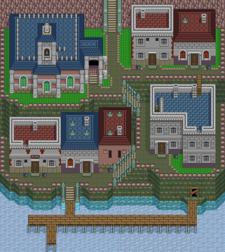
Cette map est vraiment très bien réalisée. Elle est pensée à la fois en « pleins » et en « creux », et les escaliers donnent beaucoup de profondeur. Mais là, on reste encore dans le cas d'un relief assez marqué. La représentation d'une petite dénivellation est possible mais souvent trop « crue » pour suggérer une pente. On est donc obligé de passer par une construction en terrasses.
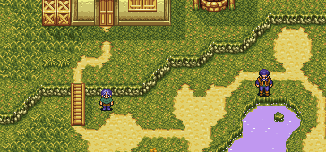
N'hésitez pas à recourir à cette technique pour échapper au « plat total » plutôt ennuyant lors de l'exploration. Une autre technique à mettre en œuvre consiste à associer des reliefs de hauteurs différentes pour éviter l'effet « mur » (pour les falaises le plus souvent).
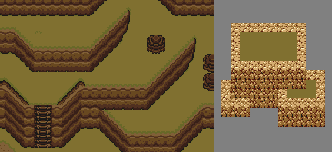
Dans le même ordre d'idée, vous pouvez insérer de petits plateaux dans vos montagnes, plateaux que le joueur ne pourra pas forcément explorer mais qui contribueront à l'aspect esthétique et à l'équilibre général.
Et j'en viens à parler du volume (d'autres points importants touchant au relief seront abordés dans la partie suivante, car ils font intervenir la question du gameplay). Ce problème du volume ne se pose que pour les perspectives particulières ; l'essentiel est de ne jamais oublier de penser en 3D même pour des graphismes en 2D. Ainsi il faut faire attention aux décalages de hauteur qu'on observe parfois sur des reliefs complexes
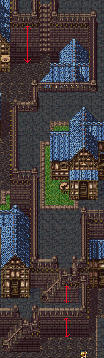
Sur cette capture d'écran de Final Fantasy VI, la hauteur du mur en haut doit correspondre à la somme des deux hauteurs de mur (deux escaliers) en bas (tout est correct, on a une hauteur de 4 tiles reportée partout). Ici le volume est relativement simple (avec un mur). Mais la difficulté va apparaître dès qu'on essaye de complexifier le volume en faisant s'empiler des niveaux de hauteurs différentes.
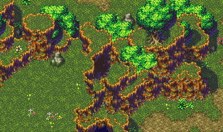
La complexité du relief sur cette map est assez hallucinante. Obtenir ce genre de résultat n'est pourtant pas très difficile du moment que l'on est méthodique, que l'on pense bien au volume, que l'on compte toutes les hauteurs soigneusement (et que l'on possède les graphismes adaptés, mais c'est un autre sujet).
Voyons maintenant quelques points souvent problématiques, toujours avec cette perspective en 2D, et tout d'abord l'éternel effet « les plans inclinés ont l'air de face ».
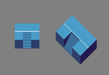
L'exemple de gauche montre un escalier créé en juxtaposant deux tiles l'un au dessus de l'autre. Or, si on se représente correctement le volume (en 3D, exemple de droite), on se rend compte que cet escalier est en fait extrêmement raide ! Il convient donc de rajouter un carreau d'escalier supplémentaire (au dessus ou au dessous, au choix).
Toujours dans cette idée de bien penser « en volume » :
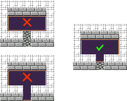
Ce petit exemple du placement d'un tapis parle de lui même. Pour que le tapis occupe toute la surface du sol, il doit être positionné en tenant compte de la largeur des murs (ici, un tile). Bien sûr, l'exemple en haut à gauche n'est pas « incorrect » au sens strict, mais il apparaît illogique que le tapis soit placé comme ça dans une pièce et surtout la juxtaposition « bas du tapis / sommet du mur » est extrêmement déplaisante d'un point de vue esthétique et elle prête à confusion (le joueur se demandera si c'est un choix délibéré ou un mauvais mapping, or un bon mapping ne doit soulever aucune question de ce genre).
Enfin, pensez à ces petites choses quand vous mappez :
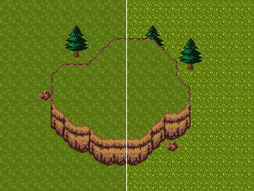
La partie gauche correspond aux choses à ne pas faire, la partie de droite montre les erreurs corrigées.
- Un élément de petite taille (tel qu'un caillou, une plante) a tendance à casser le volume et la perspective. Mieux vaut placer ces éléments périphériques plutôt devant les structures principales ; toutefois ce n'est qu'une recommandation générale et il n'y a rien de dramatique à ne pas la suivre constamment.
- Deux sols de hauteurs différentes ne devraient jamais être exactement similaires ; cela crée une confusion, une perte de repères chez le joueur. Au contraire, il vaut mieux employer deux types de sol différents pour marquer l'élévation (rien n'interdit ensuite de varier les textures au sein même de ces sols, ce qui manque d'ailleurs cruellement à l'exemple).
- Un arbre isolé placé derrière une falaise, entièrement visible, casse le volume. Je conseille personnellement de placer le plus possible de marques du volume (par exemple, un arbre dont la moitié inférieure est cachée comme sur l'exemple de droite, mais ça pourrait être un rocher, le mur d'une maison…).
Mapping et gameplay.
Nous abordons dans la dernière partie de ce tutoriel la question du gameplay. Comme on l'a vu, le mapping doit paraitre réaliste, il doit être agréable à l’œil et varié pour que le joueur ne se lasse pas. Mais les contraintes du gameplay sont nombreuses et vont déterminer pour beaucoup la structure d'une map.
La notion fondamentale ici, c'est le parcours. Il faut suggérer un ou plusieurs parcours au joueur pour éviter qu'il passe dix fois par le même endroit, qu'il se perde, qu'il se lasse. Suggérer un parcours, c'est aussi amener le joueur à rencontrer des personnages, trouver des coffres, combattre des ennemis là où vous le voulez et dans l'ordre que vous voulez.
Comment suggérer des parcours ? D'abord avec des techniques de contrainte et d'incitation.
L'une de ces techniques majeures, c'est la mise à profit du relief. Vous pouvez créer des couloirs de circulation en bloquant le joueur à différents endroits avec le relief ou des éléments bloquants (arbres, pierres), ou tout simplement en plaçant des signes visuels (non bloquants, donc) comme un chemin. Le joueur a toujours tendance à emprunter les passages les plus dégarnis en éléments, les moins denses (la simplicité attire, la complexité — ou densité — rebute). Ainsi pour des intérieurs de maison, je conseille de placer la majorité des éléments contre les murs, pour dégager de grands espaces de circulation plus attractifs (et plus agréables à parcourir du point de vue de la jouabilité).
Mais les techniques de motivation sont beaucoup plus intéressantes (et difficiles) à mettre en œuvre. Il s'agit de faire voir quelque chose au joueur, tel qu'un coffre, un objet étrange, un personnage, mais de telle façon que cette chose paraisse totalement inaccessible. Le joueur va chercher à arriver jusqu'à cette chose et pour cela il sera forcé de suivre le chemin que vous aurez prévu pour lui. Ce cas de figure est extrêmement utilisé dans les jeux professionnels de toutes sortes. Dès le début de la map, on nous aguiche avec une porte grandiose nécessitant une clé, on nous fait miroiter la sortie de la map… Ce qui motive le joueur. Il a alors une raison de faire l'exploration (autre que le plaisir des yeux à regarder le décor ou le combat contre des monstres), et va même y prendre plaisir.
Rien de pire que de ne suggérer aucun parcours !
Le pire cas d'exemple possible est celui de la place de village bordée de maisons en rayons (place d'où pourrait démarrer le héros). Le joueur n'est donc pas vraiment perdu puisqu'il sait qu'il doit visiter une à une ces maisons ou seulement l'une d'entre elles pour progresser, mais sans aucune indication il va se sentir totalement découragé. Ce sentiment de devoir « tout visiter » alors que les chemins sont extrêmement nombreux constitue un danger majeur qu'il faut à tout prix éviter.
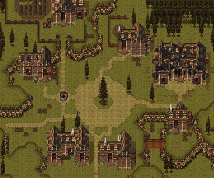
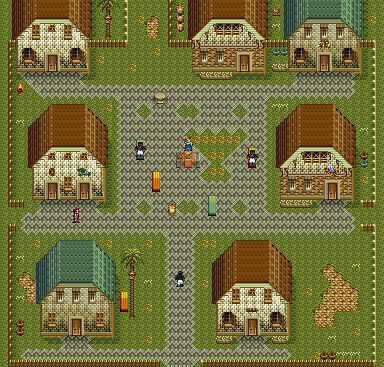
Une seule exception à cette règle : les lieux particuliers comme un bazar (un souk), un palais-labyrinthe… Où perdre le joueur en le saturant de parcours disponibles est alors un choix de game design. Mais même pour ces cas d'exceptions il faut prévoir un fil directeur, choisir un parcours principal à suivre et disséminer des éléments de repères (par où était l'entrée, par où sera la sortie) pour que le joueur puisse se raccrocher à quelque chose.
Nous allons maintenant voir quelques recommandations d'ordre pratique, toujours en relation avec le gameplay.
A commencer par les bords de maps (cette recommandation concerne plus spécifiquement le mapping de graphisme 2D mais s'applique aussi aux maps 3D). Le joueur ne doit jamais être bloqué par un « mur invisible » qui serait en fait le bord « virtuel » de la map. Une solution pour remédier à ce problème : ceinturer systématiquement les maps avec du relief et des éléments bloquants (une forêt, une rivière, etc.). Attention toutefois à ne pas tomber dans l'aspect « muraille ».
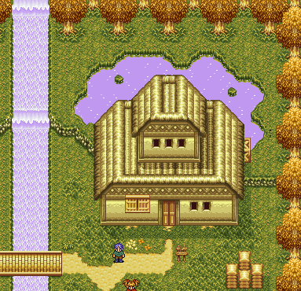
Cette map est correctement ceinturée avec des arbres, mais à cause de leur alignement parfait cette fonction devient trop évidente. Le joueur ne devrait jamais remarquer qu'on lui bloque le passage « consciemment ».
Si le joueur est bloqué par un mur invisible, non seulement ce sera pour lui une incohérence (visuellement, rien ne lui interdit l'accès) mais ce sera aussi le dévoilement de « l'envers du décors », du support logiciel du jeu. On voit parfois ce problème dans les jeux 3D : vous vous êtes sans doute déjà retrouvé dans cette situation où l'on fait brusquement face à un vide immense ou à un « mur » ; en cas d'erreur de programmation, on peut même « sortir de la map » et la contempler de l'extérieur. Il faut bien réaliser que dans ce cas là il y a rupture complète de l'illusion, l'immersion est anéantie.
De cette recommandation particulière je propose donc une recommandation plus générale : évitez à tout prix les erreurs de mapping qui vont faire voir au joueur l'envers du décor (autrement dit, le support logiciel du monde fictif que vous avez mis en place). Certaines erreurs, vous l'aurez compris, sont plus graves que d'autres… Un autre conseil que je vous donne : pensez à adapter la taille des maps en fonction de la vitesse de déplacement. Je crois qu'il n'y a pas besoin d'en dire beaucoup plus. Si vous voulez que le joueur passe du temps sur une map, faite la grande ou complexe, mais ne trichez pas en contrariant le déplacement du joueur.
Enfin, si vous avez à mapper des infrastructures très grandes (villes, bâtiments possédant de nombreuses pièces, etc.), ayez à l'esprit que l'exploration de chaque point d'entrée sera fastidieuse (intérieurs des maisons ou intérieurs des pièces). Vous devez recourir à des astuces pour limiter le nombre d'entrées à l'intérieur d'une map. J'en vois deux :
- Tout d'abord, interdire, tout simplement, l'accès à une entrée (barrière, porte fermée à clé, etc.) mais cela risque de créer un sentiment de frustration (et le joueur risque de ne pas comprendre ces interdictions, il va peut être penser qu'il y a quelque chose à faire même si ce n'est pas le cas).
- Une deuxième astuce, bien meilleure : cacher l'entrée, tout simplement. Dans le cas d'un mapping 2D, il suffit de ne pas montrer l'entrée (ne pas placer de porte sur la face visible d'une maison ; le joueur s'imaginera qu'elle est derrière). Les maps 3D posent plus de problème puisque le joueur peut étudier un bâtiment sous tous les angles. A vous d'improviser en plaçant des murs, en accolant les structures pour limiter le nombre d'entrées. La map ci-dessous utilise ces techniques extrêmement bien.
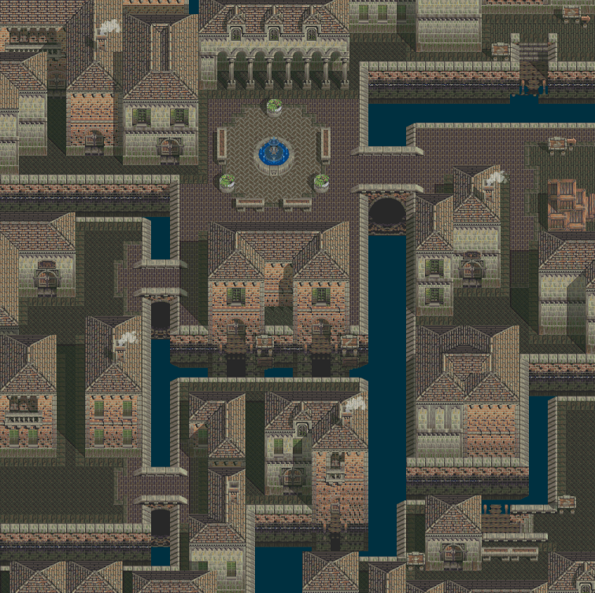
Conclusion
Voilà, ce tutoriel touche à sa fin. Je pense avoir abordé la plupart des notions clés ; il est possible que vous constatiez quelques oublis, si c'est le cas n'hésitez pas à m'en faire part. Certaines parties sont sans doute contestables, mais je vous demande de considérer tout ce que j'ai écrit comme une simple proposition de méthodes et non pas l'affirmation de règles d'or fonctionnant quelque soit le contexte. Avant de clore ce tutoriel, j'ai une dernière recommandation à donner à l'apprenti mappeur : les jeux professionnels ne sont pas obligatoirement bien mappés (à titre d'exemple, je citerai le jeu Terranigma du développeur Quintet), et il ne faut pas avoir peur de sortir des figures classiques du mapping afin de proposer quelque chose d'innovant.
Ajouter un commentaire
Commentaires

Ce commentaire contiendra des suggestions supplémentaires à ce tutoriel…
Je me permets de revenir sur certains points, et d'apporter ma patte. Je n'entrerai absolument pas en contradiction avec ce tutoriel : ce n'est pas l'objet de ce message.
Cette partie est extrêmement intéressante : http://www.lesforges.org/media/img/mapping-1.png
Directement concevoir un LIEU en plusieurs maps de DIFFÉRENTES TAILLES, c'est super ! En revanche, qu'est-ce qu'une map spéciale ?
Pour ma part, j'aime bien parler de "Safe Zone". Une zone où l'on est pas aggro, ou où l'on peut se "Cacher" et se "Reposer".
Par exemple : dans une forêt qui grouille de monstres, une "Map spéciale" peut être une Fontaine des fées (Zelda Link's Awakening RPZ), ou un petit village qui permet de se reposer, récupérer deux trois objets, et retourner farmer/taper sur tout ce qui bouge.
Dans une autre forêt, où un gnome nous poursuit, une Safe Zone (ou "Map spéciale" peut être une map sur laquelle on trouve une petite cabane dans laquelle l'on peut se cacher, et où le gnome le pensera pas à venir nous chercher…
Une "Map spéciale" peut aussi très bien être l'entrée d'une grotte au milieu d'une forêt (j'aime les forêts).
Et pour ce qui est d'autres idées encore, je vous laisse y penser !
J'adore "Combiner" ce tutoriel avec celui de RoiOfTheSuisse sur Oniromancie… :
http://www.rpg-maker.fr/tutoriels-531-generation-procedurale-d-un-donjon-a-la-zelda.html
Je fais un graphe (comme lui) : http://img110.xooimage.com/files/a/d/4/mack-donjon-1-48a33d8.png
Chaque noeud correspond à une map.
Je colorie au pif mes noeuds. Rouge = petite map Vert = map moyenne…
C'est bon, vous avez compris ?
Une fois le graphe fait, je me base dessus pour créer l'équivalent de ceci : http://img110.xooimage.com/files/0/e/0/arbre-donjon6-48aa2ff.png
Par exemple… : https://media.discordapp.net/attachments/423091832423972874/423546735475032064/unknown.png
Si je n'ai "Pas assez de place" pour pouvoir créer mes salles et les connecter comme elles le sont sur le graphe, j'en crée de nouvelles, qui seront des couloirs, des maps "transitives". (Ce sont les fameux "T").
https://media.discordapp.net/attachments/423091832423972874/423546690037874688/unknown.png
Je songe bien à la notion de "Passage unique" (corniches desquelles on ne peut sauter que d'en haut dans Pokemon, portes qui se referment et se verrouillent derrière nous dans Zelda…) pour inclure une notion d'allers-retours, de choix et de pièges.
Pour ce qui est des zones : très intéressant également ! http://www.lesforges.org/media/img/mapping-5.png
Je me sers de ce petit "Schéma" que j'ai fait de mes successions de map pour en créer un… ^^ Juste que, du coup, pour créer des "Zones", je me permets d'encadrer ce schéma et de dire : il y aura une zone "Petite", une zone "Grande", une zone "Moyenne", réparties de telles façons, sur… une seule map !
https://media.discordapp.net/attachments/423091832423972874/423545106105237514/unknown.png
Et l'on retrouve l'idée de faire "Des maps dans les maps", c'est fou, non ? :)
Autre chose encore, que je trouve fort amusant, c'est de ne pas penser qu'une "Petite" map est une map de 20 tiles de côté par 15, qu'une grande est une map de 50 tiles de côté par 15… Non !
En fait, on peut très bien faire toutes les maps de son jeu en 50 carreaux par 50 ! Juste que la "Petite" map sera bordé par des murs, des arbres… bref, des tiles inaccessibles, quoi !
C'est à peu près ce qu'il se passe dans Zelda Minish Cap, et c'est d'ailleurs pour ça que sa transition "En scrolling" entre les maps marche si bien et est toujours parfaitement alignée.
(Amusez-vous à aligner une map en 50 * 50 avec une autre en 20 * 15, on va bien rigoler… comme des fous…)
Le seul point qui manque un peu à ce tuto, je crois, (peut-être l'ai-je encore mal lu, haha !), c'est la notion de passabilité. OK, on a la notion de parcours, qui est super ! Mais on n'a pas la notion de la place que le joueur doit avoir pour pouvoir se déplacer, pour qu'il puisse se sentir libre, mais aussi guidé !
Bref, ce n'est pas bien grave.
Je me permets un exemple avec une map en pokemon like :
Contexte : les pokemon du joueur sont tout raplaplas, il veut à tout prix éviter un combat. Il est déjà un peu énervé/stressé/déstabilisé.
Une map, et le "Parcours" du joueur dessus :
http://img110.xooimage.com/files/0/e/c/intelligence-5481fdd.png
Le joueur arrive d'en bas. Il voit le "Rond point". Il commence par vouloir franchir ce "Rond-point" par la gauche, mais voit des herbes. Mince !
Il essaie donc d'être feignant. Et passe là où il n'y a pas d'herbes (donc, pas de combats ?).
Surprise ! On lui met un dresseur dans les pattes ! Il va, par réflexe, vouloir "Être plus malin que nous", et ne va donc pas forcément simplement revenir vers ses pas, mais profiter de la façon dont on a mappé pour éviter le dresseur et gagner du temps…
Et pouf ! Il tombe dans des herbes ! RAH ! Il a vraiment tout gagné…
(Et oui, les vieux jeux nous énervaient pas mal, mais en fait, c'était surtout parce qu'ils étaient très bien pensés !)
Autre point sur lequel je ne m'étendrai pas trop : répéter le même tile, l'un à côté de l'autre, ça se fait… Si si… https://media.discordapp.net/attachments/423091832423972874/423557084575956992/unknown.png
https://media.discordapp.net/attachments/423091832423972874/423557412499357696/unknown.png
Quant aux décors plus "Spéciaux" et "Rares", ils sont généralement aussi là pour donner un peu de Gameplay. (Des jarres que l'on peut fouiller, des herbes que l'on peut couper…)
Je n'ai pas vu ça sur ce tuto, m'enfin, ce n'est pas grave !
Voili voilou… En espérant ne pas être trop confus (en tout cas, je suis sûr déjà sûr d'être trop dense…)
Bien à vous, Boubou.
Salut !
À mes débuts, j'ai longtemps malaimé ce tutoriel, parce que je l'avais mal compris, et "Intégré" les informations que d'une façon trop fragmentaire.
Après dix ans de mapping… Je dois admettre que ce tuto est vraiment soufflant. Je finis par y retrouver absolument tout le discours que je tiens moi-même concernant le mapping !
La partie sur l'importance du Gameplay dans le mapping (on touche au level design, du coup) est très intéressante : effectivement, le Gameplay remplit lui aussi la map !
Et c'est vraiment très bien de le souligner !
Pour le reste, c'est vraiment super. J'ai également adoré la partie sur les falaises/hauteurs de murs. Link's Awakening DX peut (à peu près) se tenir tranquille…
Super tuto !
Bien à vous, Boubou.

Bonjour,
Je vous remercie pour cette série d'articles. Une question : vers le milieu, dans la map avec les arbres isolés (ctrl+F : "Un dernier exemple :"), ne serait-il pas mieux pour adoucir la bordure d'enlever un ou deux arbres ? Comme ça, on ne perd pas de place.
edit : en fait, je pense qu'on verra le bord de la map, si on fait ça, donc je n'ai rien dit.
edit2 : et puis je n'avais pas vu la date de publication de l'article.
Merci beaucoup pour cet article, très utile et rappelle de nombreuses notions simples à retenir mais trop souvent oubliées.
génial comme tutos, félicitation^^